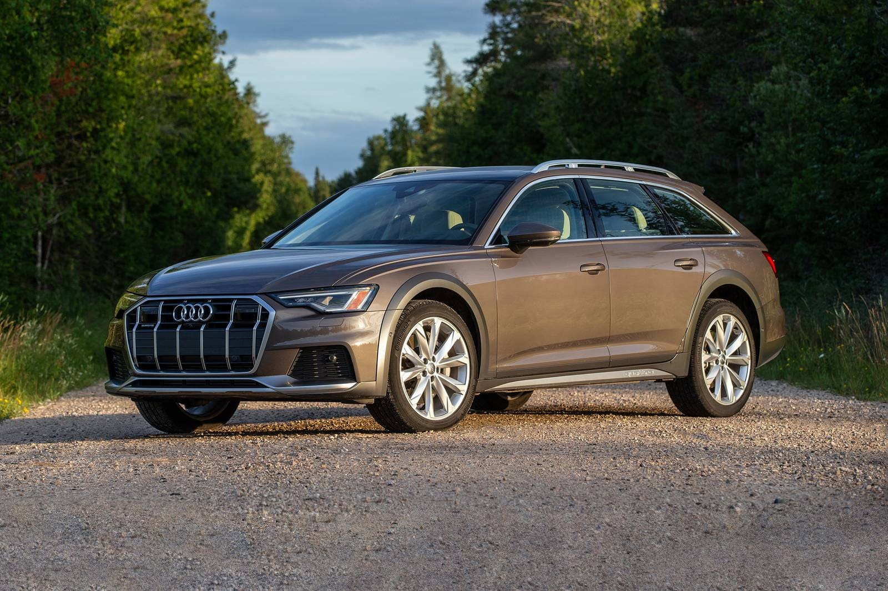
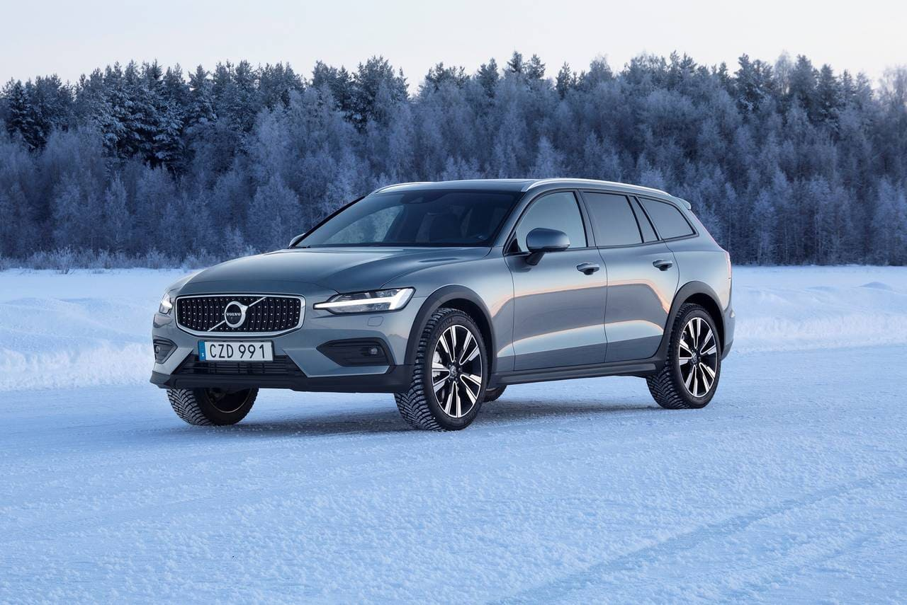
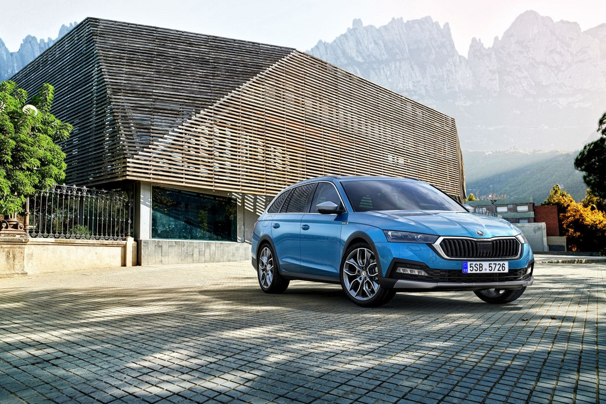
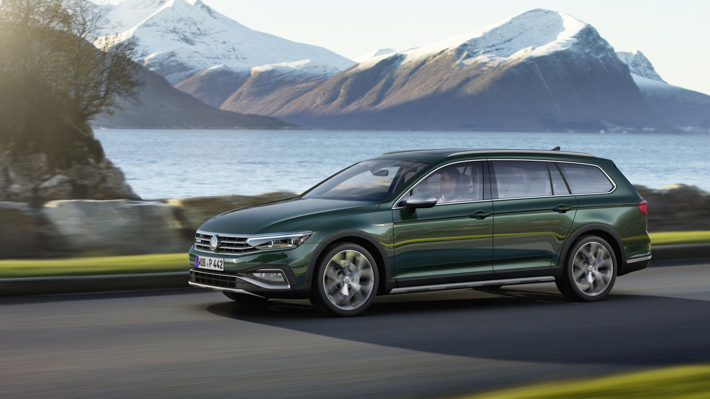

- Ауді A6 Allroad
- Вольво V60 Крос Кантрі
- Субару Аутбек
- Шкода Октавія Скаут
- Фольксваген Пассат Alltrack
Ауді A6 Allroad
A6 Allroad поєднує в собі представницький рівень комфорту та вишуканості. Разом з тим фірмовий повний привід та можливість збільшення кліренсу до 195 мм дозволяють без проблем їхати поганими дорогами або легким бездоріжжям. Наш пошуковий робот зібрав з усіх автосайтів України 180+ оголошень про продаж Ауді А6 Allroad. Останнє покоління дебютувало у 2018 році та обійдеться на автобазарі від 42 000$. Попередні генерації універсала теж варті уваги. Почитайте, які відгуки про Ауді А6 Allroadзалишають власники.
Вольво V60 Крос Кантрі
Універсал підвищеної прохідності Volvo V60 Cross Country з'явився на світовому ринку у 2015 році. Модель має чим підкорити покупця: кліренс 210 мм, розгін до 100 км/год за 6,4 секунд, лаконічний, але дуже стильний інтер'єр, зручна інформаційно-розважальна система з 9,0-дюймовим екраном. Як і слід очікувати від Volvo, пріоритет віддається безпеці, тому всі основні системи безпеки входять до стандартної комплектації. На автобазарі за Вольво V60 Крос Кантрі просять від 27 000$.
Шкода Октавія Скаут
Мегапопулярна Octavia доступна у вигляді посиленої версії Scout. Повнопривідний універсал має дорожній просвіт 180 мм та гарантує відмінну керованість у будь-яку погоду. Додайте до цього невибагливість до палива та обслуговування, а також продуманий ергономічний салон. Те, що модель справді “універсальна”, підтверджують відгуки про Шкода Октавія Скаут.
Фольксваген Пассат Alltrack
Volkswagen Passat Alltrack є позашляховою версією звичайного Пасату в кузові B7. Універсал забезпечує традиційний для моделі комфорт на міських дорогах та трасах. На заміських шляхах додадуть впевненості дорожній просвіт 27,5 мм, система повного приводу 4MOTION і набір помічників Off Road. Щоб більше дізнатися про реальний досвід володіння універсалом, перегляньте відгуки про Фольксваген Пассат Alltrack.